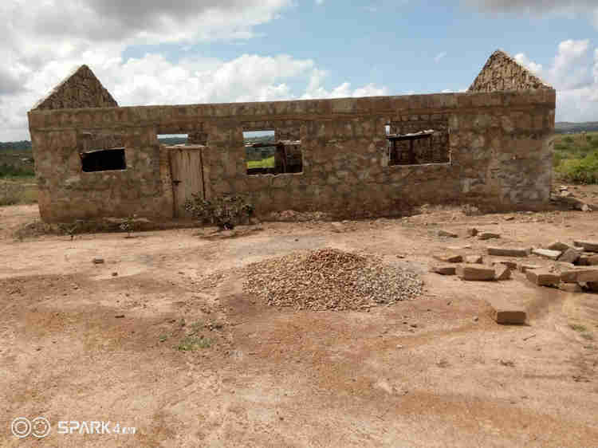
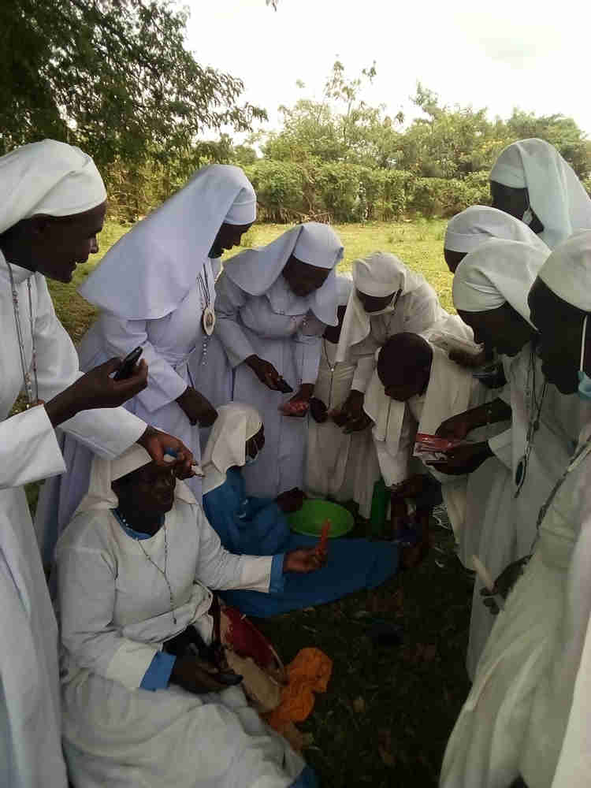
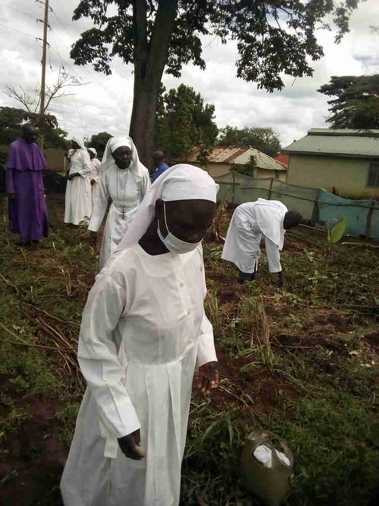
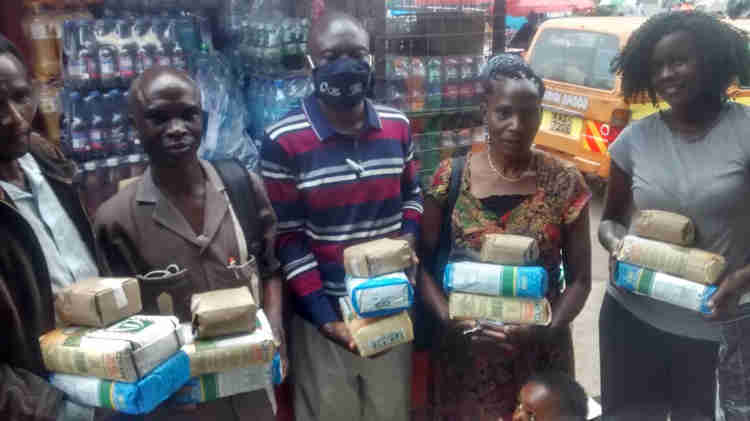

Faith Based Community Inclusion Currencies

Due to economic instability, many people in the marginalized communities are short of money to pay for church offerings or even worse, to set up their local churches. Local churches that have begun to develop their own community currencies (Sarafu) in order to developed their church structures and pay offerings and even meet their basic needs. Sarafu has created a stable medium of exchange allowing them to support one another as individuals and also their church at large. Below are some of the examples:
AMK CHURCH
The church (pictured above) is located in Mkanyeni village, Mtaa location, Bofu Sub-location in Kasemeni ward, Kwale County. It was started way back in 1990. The church was founded by Pastor Dzeha Nyanje as the community did not have any place of worship around by then. Being that they could not afford the construction money, the congregation resorted to worshiping under a tree every Sunday. In the year 2000, through the leadership of Pastor Dzeha Nyanje,the church decided to put up a temporary structure using mud.
“The tree that provided us with the shade dried up and fell down and that's when we decided to build a temporary structure” Dzeha explains.
At the height of the COVID-19 pandemic in 2020, Mkanyeni community was among the numerous communities that were empowered by Sarafu to build their own prospering economies. Pastor Dzeha Nyanye was one of the people that was trained on how to use the Community Inclusion Currency -a blockchain based voucher used to trade among community members when the national currency is scarce. Dzeha who is also a shopkeeper explains how Sarafu has impacted his community positively,
”Sarafu has been a safe way of trade even during the pandemic since I no longer need to carry cash, it has also created job opportunities in my community since the youths and even those without businesses or jobs can now offer services to those registered in Sarafu and earn an income. My sales have also increased as the users that could not have afforded a product from my shop due to lack of the national currency, can now use Sarafu to top up the little they have and get a product from me. I have created a network in my community and I'm also able to get other products that I don’t have in my shop from other users in my network.”
It is during this time that Dzeha saw an opportunity to develop his church. He quickly shared this concept with his congregation and they equally liked and received the concept well. They were happy and optimistic about building their church through Sarafu. They contributed Sarafu jointly and bought the building materials like sand, cement. metals, water and stones. They were able to pay the people that would work on the site in Sarafu and those people with Sarafu could pay tithings and local goods and services from the congregation. Their church is not yet done but they are grateful that Sarafu was introduced in their community. They are hoping to complete their roofing soon. ”We are grateful to Sarafu because through it, my community got empowered and as a church in particular, we've made tremendous developments.” Said Elizabeth Chari, one of the church members.
AMK church’s new permanent construction.
A congregation that consists of 48 members are now able to worship in a conducive environment. They are glad that they can now easily give in their church offerings every Sunday using Sarafu as this was initially a challenge since the national currency was scarce. Being that they worship together, they’ve formed a sustainable economy and network where they support each other by exchanging goods and services using Sarafu during their normal days. They are therefore growing their local economy as well as receiving basic needs like food, water, transportation among other needs.
ST. REGINA SEGERE LEGIO MARIA
The church is located in Ouru village, Alego Usonga Constituency in Siaya County. The church was started in 1973. The church has a congregation of around 50 members pictured above. Apart from worshiping and praying together, they support the youths, orphans, widows, the physically challenged and the mentally challenged persons within their community. They’ve been using part of their tithes and offerings to run this course. They’ve also been mobilizing well wishers to attend harambes (community support offerings) after which they would use the funds raised to cater for the needs of the school going orphans under their custody.
When Emmaculate Onyango, one of the founders of Bangla-Pesa visited the church and enlightened them on the importance of the Community Inclusion Currencies (CICs), the church embraced the concept and created time for training. They grasped every aspect of how it works and 40 of them were then registered to the system. This group has been able to play a major role in their community as they’ve also registered other members within their local markets hence creating a big sustainable network of trade. Above you can see the church members buying locally made candles in Sarafu.
They were lucky enough to also get empowered and trained on Syntropic Agroforestry through the Shamba ya Jamii program -a regenerative agriculture technique that provides a long term food forests. They’ve then started up their farm that they run and maintain using Sarafu. They’ve been able to source for local farm inputs and seeds and also pay labourers who work on their farms daily using Sarafu. Their farm is doing well and they are hopeful that in two weeks time, they will have their first harvest of vegetables.
Speaking to Christabell- a selfless hardworking lady in her mid twenties, she gladly explains how great Sarafu has improved their livelihood, "It was hard feeding the big number of the vulnerable persons that we have under our care since the offerings that we use for the same weren't enough or rather sustainable. Since we started using Sarafu, the burden is lighter. We are able to source food from the nearby market since we also registered them in Sarafu. The youths are also empowered and can now offer services to different users and get paid in Sarafu. We receive more offerings than before and we use the same to cater for basic needs. We are also working hard in our farms and we are looking forward to good harvest that we will also sell in Sarafu”
Church members working on their farm.
Pastors Network Nairobi
This is a group of around 36 members from different denominations within the 30 counties out of the 47 counties in Kenya who came up with a vision to develop local churches, teach the good news, support the vulnerable persons in their community and reach out to the elderly within their communities. They usually contribute from their pockets to run their course. They have been experiencing financial challenges as sometimes they also lack the money to give into the kitty.
When Sarafu was introduced to their community, they felt that the concept would help them fill the gaps in their quest to support the vulnerable households in their different communities. They were trained on how to use the Community Inclusion Currencies(CIC) after which they were registered. They joined the many other communities that have been empowered to prosper their own economies. They were able to get basic needs through exchanging goods and services in Sarafu. The pastor Network Group joined hands and registered all the people under their course. “Since we started using Sarafu, I have never slept hungry as I can easily get food from my network. Before Sarafu, I could only manage to get one meal a day. I’m looking forward to making my network bigger to help me get more products. We also use Sarafu in our churches to pay tithes and offerings.” Said Mary, the group's treasurer. Members of Pastors Network (pictured above) group ready to visit a number of vulnerable households.
The vulnerable people that they take care of have since been able to buy food, water and pay for their transportation using Sarafu. The burden is now lighter to the group as they only provide other needs like education and medical needs to them. They are planning to start up projects -bee keeping and farming that they will run and maintain using Sarafu. The main goal of the projects is to get more funds to help the vulnerable people and to create job opportunities within their communities.
We continue to drum up the importance of communities building their own economies through using the Community Inclusion Currencies that would hence enable them to exchange goods and services and maintain and run projects and businesses without waiting on the national currency that is mostly scarce especially in the marginalized communities. The churches are therefore not left behind as they are enabled to run their activities and support different peoples under their care through the use of Sarafu.
Written by:
Otieno Akinyi Janet